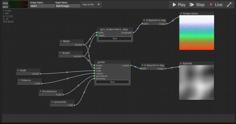
PhD Project: Genesis - Machine Learning and Procedural Generation
My PhD project consists of a node based workflow system in Javascript with asynchronous communication to a backend Python web app. The web app can coordinate the mixing of arbitraty procedural generation providers, including Machine Learning techniques and traditional PCG algorithms.
Bitbucket: Link
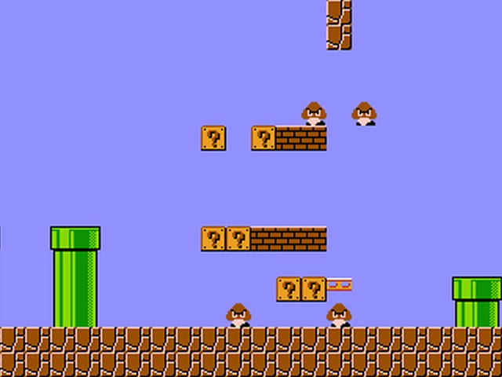
SMB Level Generation: Recurrent Neural Networks
This project trained a RNN with levels from Super Mario Bros. (without the underwater levels) treated as strings of text and attempted to produce more levels using the trained model. Levels were converted to text using Pillow, comparing to reference tiles (and ignoring things like clouds and bushes). Various RNN parameters were tried in order to find stable level generations, but the lack of training data made this difficult.
Inspired by this article.
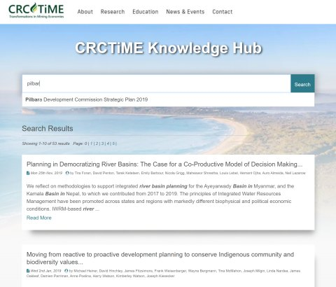
CRC-TiME Search Engine
This is a custom search engine created using ElasticSearch, and shown via a matching Wordpress plugin that can be embedded in any site. The system supports authentication to the search backend and TLS encryption. Development of seperate components was done in a Docker environment.
Github: Link
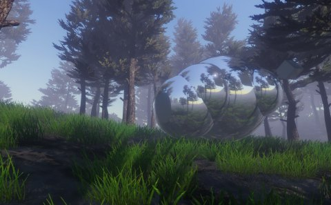
Procedural Sci-fi Terrain
An experiment to use procedural tools developed for my PhD and elsewhere to create a 'weird' sci-fi terrain. Terrain elements and layout are driven by procedural data, and topology-dependent objects (such as reflection probes are calculated at runtime to enable dynamic effects.
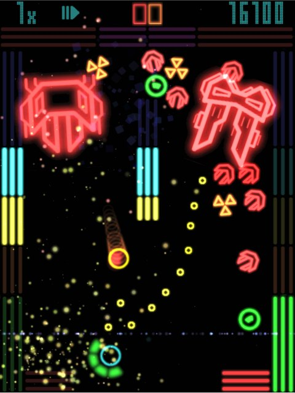
Halogen
When the iPad first released, I developed a game which was a blend of space invaders and air hockey. In Objective C, with Cocos2D for physics.
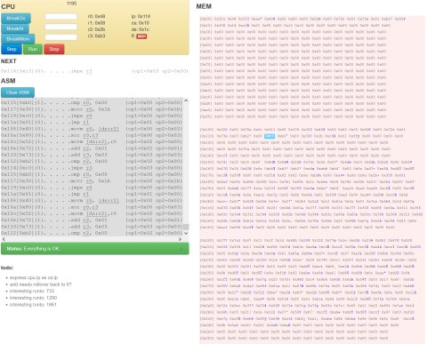
GCHQ Challenge
In 2011 I found a link online to a puzzle which turned out to be really interesting and fun. In part 2 of that puzzle, you are given a javascript file with a memory dump and a description of the machine opcodes. The task was to write a virtual machine which could replay the code and 'process' the memory dump. I made mine in javascript, made a step/jump debugger and an assembly console, and had a heap of fun.
Tumblr: I blogged about it at the time.

Proactive: Electronic Patient Reported Outcomes
This project involved the creation of an app (mobile/desktop) where a patient can answer questions about their treatment/recovery, and a web application. The web app can create new questionnaires for patients, but also analyse and display submitted patient data for use during consultations. C#/Unity app, Python/Django/JS webapp.
Bitbucket: Link
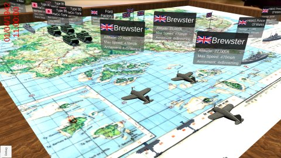
Ford Factory: AR Reconstruction of the Battle of Singapore
Undertaken with a team of students on a study trip to Singapore, this project allows the Battle of Singapore to be replayed in AR via a mobile phone. The time scrubber allows a viewer to fast-forward or rewind the battle as planes, tanks, ships, and infantry move around the map in accordance with various historic timeline events. C#/Unity/Vuforia
Bitbucket: Link
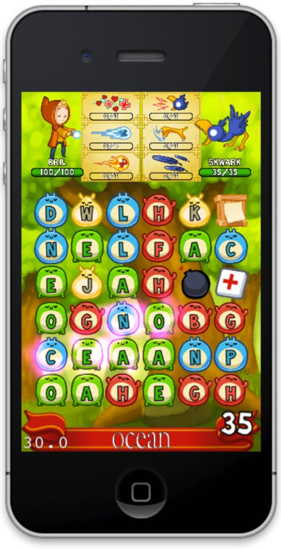
Glyf
An in development word game for mobile devices. Make words to charge your spells and defeat your opponents. This project started as Obj-C for iPhone only, but with the rise of Android became cross-platform.
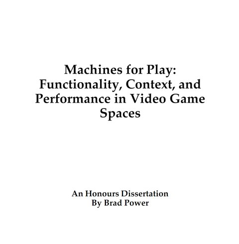
Machines for Play
My honours thesis is an examination of the drivers of virtual space design and how their contributions form the overall spatial experience. This breakdown illustrates the importance of functional, narrative, and performance design as intersecting human design processes, and lays the foundation for translation into automated, procedural pipelines.
Academia.edu: Link
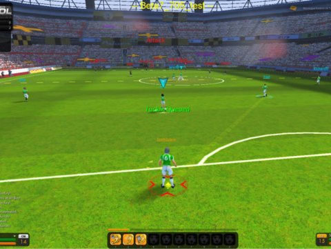
Interzone Futebol
I worked on IZF from about 2005-2008, first as a systems engineer, then a systems designer, and finally lead designer. As a football (soccer) MMO experience, I was responsible for all the on-pitch gameplay, which went through a major change once I took the helm. A great game with a lot of potential, it succumbed to the 2008/2009 International Financial Crisis
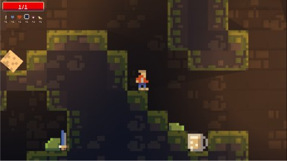
Caverns
A prototype game in C#/Unity featuring procedural cave systems and dynamic 2D lights.
Github: Link
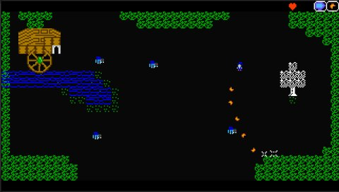
Oakseer
A game in development, a throwback to older 2D rpgs such as the original Zelda, but with graphics that might remind you of Spectrum titles. C#/Unity, music in Schism Tracker
Github: Link

{kind=link}
{kind=link}
{kind=link}
{kind=link}
{kind=link}
{kind=link}
{kind=link}
{kind=link}
{kind=link}
{kind=link}
{kind=link}
{kind=link}